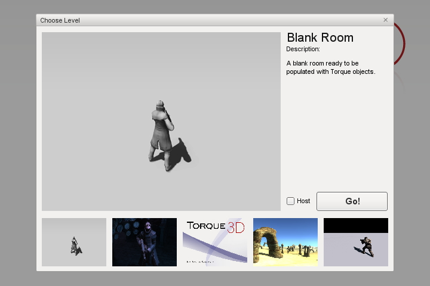
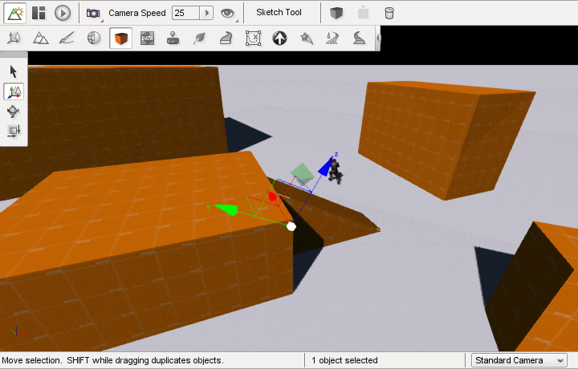
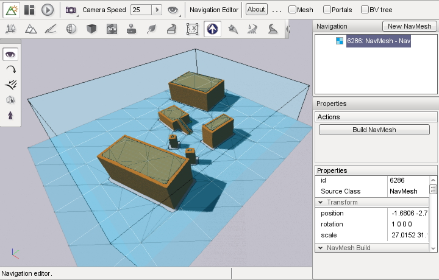
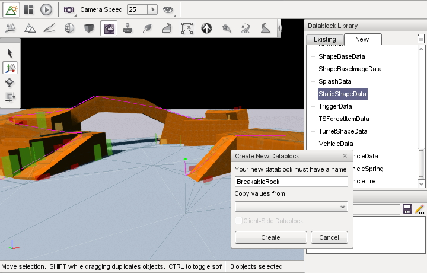
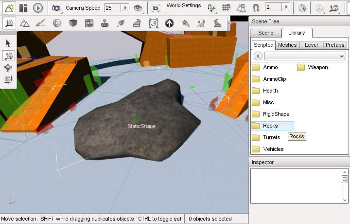

TUTORIALS
Please note that all these tutorials assume you have already installed Walkabout, and are working with a project based on the Full Template.
1. The Basics
This tutorial will take you through the very basics of using Walkabout. You'll learn how to add a NavMesh to a mission, build it, and test it with some AIPlayers. It goes hand-in-hand with this video tutorial.
Creating a new mission
When you run Torque3D, you will be presented with the main menu. Instead of opening an existing level, we'll create a new one by pressing F11 and selecting 'Blank Room' as the template.
When the new mission has loaded, the World Editor should open up straight away. Hit F5 (or select the orange cube in the editor mode strip) to enter the Skech tool. We'll use the Sketch tool to create some random geometry for our characters to navigate. Hold the Alt key, click and drag your mouse to create a shape on the ground, then move the mouse vertically to give it height. Try making some large obstacles, and maybe even a ramp up onto one of them, like so:
Creating a NavMesh
Let's create our first NavMesh! Open the NavEditor by selecting the Walkabout logo from the editor mode strip. Since there is no NavMesh in your mission already, you'll be prompted to create one. Check the box marked 'fit NavMesh to mission area' (as below) and hit 'Create'.

The 'fit to mission' checkbox automatically scales the NavMesh to the size of the objects in your mission, (not including Terrains).
Building the NavMesh
When the NavMesh is created, you will be put into the Nav editor's inspect mode. Here you can tweak the settings of your NavMesh, which you can see selected in the tree view to the right. You can see the NavMesh represented as a blue box around your Convex geometry, but there's no actual mesh yet - let's make one now! On the right, find the 'build NavMesh' button and press it. You should see your NavMesh turn red as tiles are added to it. Once it's finished building, it will turn blue again, and you should have something like this:
Testing the NavMesh
Now we're ready to test the NavMesh we just created! To go into test mode, select the small person icon on the left, or press 5. To spawn a new AIPlayer, hold Ctrl and click somewhere on the level, or aim your camera at the location you want and hit the 'spawn' button on the right. The character you've just created will be selected - move it around by clicking somewhere in the level, and watch as your character finds a path.

Congratulations! You've created and tested your first NavMesh!
2. Creating Breakable Objects
This tutorial will show you how to use Walkabout's scripting interface to create breakable objects that automatically update the NavMesh when destroyed. This tutorial assumes your peoject is based on the Full template. If your project is based on the Empty template, you will need to provide your own art, as well as script hooks like onDamage.
- Loading the example mission
- Creating a new datablock
- Creating a new script
- Making the shape destroyable
- Making the shape update the NavMesh
- Testing
Loading the example mission
For this tutorial, I'll work in the NavTest example mission. If you want to add links to one of your own missions that already has a NavMesh, then go ahead and use that one instead. If you can't see the 'Navtest' mission when you start Torque 3D and open the mission select dialog, you can find it in Walkabout R1/game/levels/navtest.mis and copy it to your own game/levels directory.
When you're in the mission, hit F11 to open the World editor.
Creating a new datablock
The first thing we need to do is create a new datablock for our destroyable shape. Open the datablock editor by pressing F6 or selecting the icon from the World editor ribbon. Create a new datablock by double-clicking StaticShapeData from the 'new' tab and name it something sensible:
In the datablock properties window below, find the shapeFile field and give the new datablock a shape. I selected art/shapes/rocks/rock1.dts, but any shape with a collision mesh will work fine. In addition, set the category property to Rocks so that we will be able to find the datablock in the World editor. Don't forget to save the datablock when you've changed its properties!
Go ahead and add a new shape with this datablock to the mission from the World editor. Open the Woeld editor by hitting F1 or selecting it from the ribbon, then open the 'Library' tab on the right, select 'Scripted' and find the 'Rocks' folder. Double click on the name of the datablock you just created.
Creating a new script
To give our new rock some interesting behaviour, we need to create a new script file with some additional logic. Script files for logic usually live in scripts/server/*.cs, whereas scripts with datablock definitions are in art/datablocks/*.cs. In this case, we'll create a new script file in scripts/server called breakableRock.cs. Make sure you name your new file with a .cs extension!
Once you've created your new script file, you need to make sure that the engine knows to execute it when you load a level. There's a file called scripts/server/scriptExec.cs which is responsible for loading up all the scripts a game needs. Open it up, and add a line at the end:
exec("./breakableRock.cs");
This lets Torque know to execute the new script file when it loads a level.
Making the shape destroyable
Now that we have a new script file for our rock, we need to add logic to make the rock take damage and eventually be destroyed. (Note: Michael Hall has written an extensive series of resources about destroyable objects. You might want to give those a try, if you actually want nice destroyable objects! I'll only show you enough here to makethe very basics work.)
In the server/scripts/breakableRock.cs file, add the following code:
function BreakableRock::damage(%this, %obj, %position, %source, %amount, %damageType)
{
// Apply the damage to the object.
%obj.applyDamage(%amount);
// If the object has taken full damage, delete it!
if(%obj.getDamageLevel() >= 1)
%obj.delete();
// Call the parent function in case it needs to do anything
Parent::damage(%this, %obj, %position, %source, %amount, %damageType);
}
In default scripts, when a weapon does damage to an object, it calls that object's datablock's damage function. Here we define a very simple damage function that just deletes the object when its damageLevel increases to 1 or above. Note that unless you change the rock datablock's maxDamage property, you'll be able to destroy the rock in a single shot. Not bad for testing!
Making the shape update the NavMesh
Now, we want the rock to update the level's NavMesh when it is destroyed. We can do this in a callback, a function that the engine calls automatically when certain events happen. In this case, we'll use the onRemove callback. Add the following code to breakableRock.cs:
function BreakableRock::onRemove(%this, %obj)
{
// Notify all NavMeshes that this object will be deleted
WalkaboutUpdateAll(%obj, true);
// Call the parent function in case it needs to do anything
Parent::onRemove(%this, %obj);
}
We just used the WalkaboutUpdateAll function which is build into Walkabout. It updates all NavMeshes, notifying them that an object is to be added or removed (the meaning of the second parameter).
Notice how in both of the functions we just wrote, %obj refers to the rock shape itself. %this refers to the datablock, BreakableRock.
Testing
Now that our scripts are complete, reload the level, place a few BreakableRocks, rebuild the NavMesh, and shoot them! The NavMesh should automatically update to account for the missing geometry. This video shows the desired outcome.
3. UAISK integration
Walkabout is a navigation solution, but chances are you want your characters to do more than go where you tell them without running into stuff! The Universal AI Starter Kit is one of the premier addons providing AI for Torque 3D. This section will describe how to modify the UAISK to make full use of Walkabout's navmeshes.
First, we'll add some global variables that control how Walkabout behaves as part of the UAISK. In game/scripts/server/UAISK/aiGlobals.cs, add the following to the bottom of the file:
//----------------------------------------------------------------
//The values below are Walkabout-specific
// Allow behaviors to make use of Walkabout navmeshes.
$AISK_WALKABOUT_ENABLE = true;
// Distance that characters should search for cover.
$AISK_WALKABOUT_COVER_RADIUS = 20;
Next, let's make moving AI units actually use our new pathfinding! The UAISK routes most of its movement through the AIPlayer::movementPositionFilter function. We're going to hijack part of this function to use Walkabout instead of the standard movement algorithm. In game/scripts/server/UAISK/aiMovement.cs, replace this block:
//Do a simple test to see if the bot can go directly to its target destination,
//or if it needs to do something fancy to go around an obstacle
if (%this.checkMovementLos(%obj, %eyeTrans, %this.moveDestinationB) == 0)
%obj.setmovedestination(%this.moveDestinationB);
With:
if($AISK_WALKABOUT_ENABLE && %this.behavior.useWalkabout && isObject(%this.getNavMesh()))
// Use Walkabout pathfinding.
%this.setPathDestination(%this.moveDestinationB);
//Do a simple test to see if the bot can go directly to its target destination,
//or if it needs to do something fancy to go around an obstacle
else if (%this.checkMovementLos(%obj, %eyeTrans, %this.moveDestinationB) == 0)
%obj.setmovedestination(%this.moveDestinationB);
Notice that you can specify which behaviours use Walkabout by setting the useWalkabout property.
Now, we'll add a bit of spice: allowing AIPlayers that have been damaged to take cover. The Armor::damage function is called when AIPlayers are damaged. Currently, the UAISK uses this callback to do things like maki aggressive AIs respond to being shot at. In game/scripts/server/player.cs, replace the following block:
//Move a little when hit, aggressive bots move in the "Defending" state
if (!%obj.behavior.isAggressive)
%obj.sidestep(%obj, true);
With:
//Move a little when hit, aggressive bots move in the "Defending" state
if (!%obj.behavior.isAggressive)
{
if($AISK_WALKABOUT_ENABLE && %this.behavior.useWalkabout && %this.behavior.useCover && isObject(%this.getNavMesh()))
{
// Try to take cover. If that fails, just sidestep!
if(!%this.findCover(%sourceObject.getPosition(), $AISK_WALKABOUT_COVER_RADIUS))
%this.sidestep(%this, true);
}
else
%obj.sidestep(%obj, true);
}
Next, we'll modify bots' pathed movement. We're going to make bots find a Walkabout path between each UAISK path node they travel through. This will allow you to use paths as 'waypoints', instead of having to place a path node at every corner. For example, you could put one path node inside a building, the next up a hill, and the final one on a bridge, and bots will find proper paths between these points. If your level geometry changes or you decide to move your path nodes around, the bots will still find correct paths!
In game/scripts/server/UAISK/aiPathed.cs, replace this:
//The 0 at the end sets if the bot should slow down or not, you can change it if needed
%obj.setMoveDestination(%node.getPosition(), 0);
With:
if($AISK_WALKABOUT_ENABLE && %this.behavior.useWalkabout && isObject(%this.getNavMesh()))
%this.setPathDestination(%node.getPosition());
else
//The 0 at the end sets if the bot should slow down or not, you can change it if needed
%obj.setMoveDestination(%node.getPosition(), 0);
Finally, we need to set the useWalkabout and useCover properties on behaviours that you want to use pathfinding. The behaviours are in game/scripts/server/UAISK/aiBehavoirs.cs. I recommend setting useWalkabout to true for the Chase behaviour, and useWalkabout and useCover to true for the KillableNPC behaviour.
All done! Now, if you start up your game using the UAISK, you should see your characters using navmeshes and taking cover.